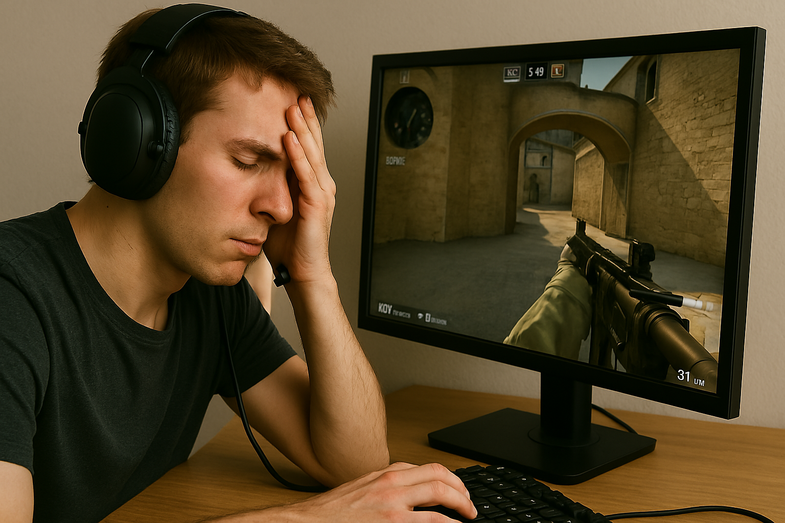

Tragisk händelse: Svensk CS2-spelare fastnar i brutal Faceit-förlustsvit
Den unge spelaren, som valt att vara anonym men kallar sig "SnusLord420" online, loggade in en fredagskväll för att spela några avslappnade matcher med vänner. Men vad som skulle bli några timmars skoj förvandlades snabbt till ett digitalt inferno. "Första matchen var lite seg, men jag tänkte att det var bara otur", säger han i en exklusiv intervju. "Men sen… sen bara fortsatte det. Förluster, trollande teammates, smurfkonton, AFK-spelare. Det var som att Faceit självt ville mig illa."
Efter 11 raka förluster på kort tid började symtomen bli tydliga. Vänner rapporterar att han började tala i callouts i vardagen, använde ord som "eco round" när han diskuterade sin ekonomi, och kallade sin hund för "bombsite B". "Vi visste att det var allvar när han började värma upp med aim maps innan han borstade tänderna", berättar hans lagkamrat och vän sedan barndomen. "Han sa att han behövde ‘hitta formen igen’."
Spelaren har nu tagit en paus från Faceit och får stöd från både communityt och familjen. En GoFundMe-kampanj har startats för att finansiera ett nytt headset och en ny mus, eftersom det gamla ska ha "åkt ut genom fönstret efter en 14–16-förlust på Inferno". Experterna varnar: Psykologer menar att detta inte är ett enskilt fall. Flera spelare har drabbats av liknande "Faceit fatigue", ett tillstånd där spelare tappar känslan för tid, rum och verklighet efter upprepade orättvisa förluster. "Det är viktigt att ta pauser, dricka vatten och gå ut i solen ibland", säger e-sportpsykologen Lena Andersson. "Och kanske undvika solo queue efter midnatt."